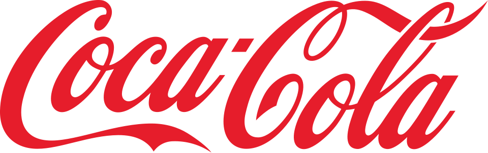
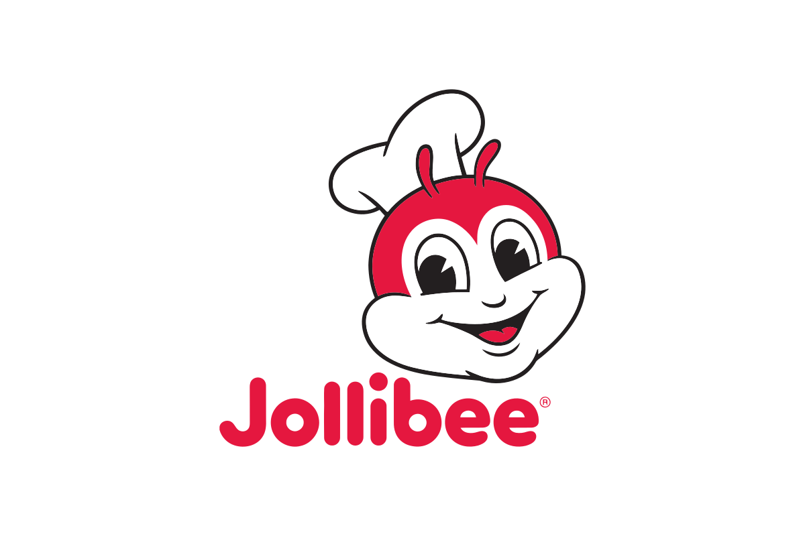
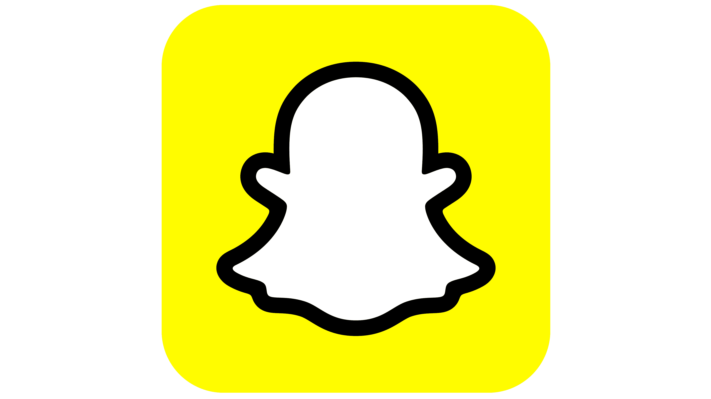
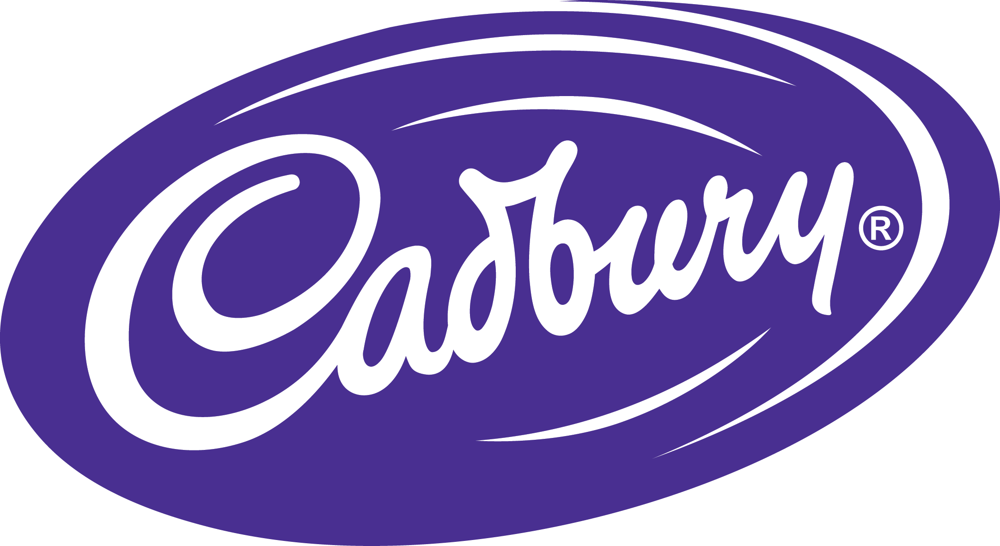
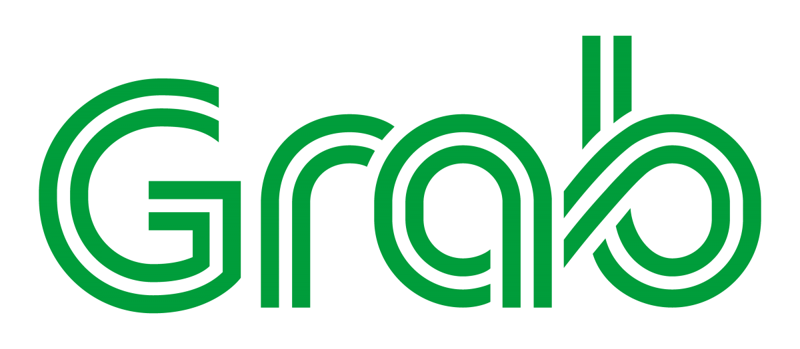
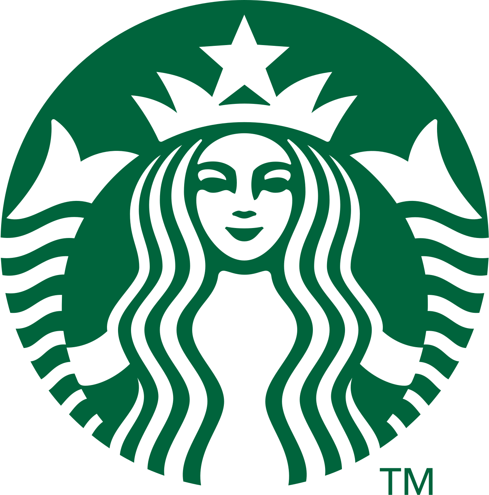
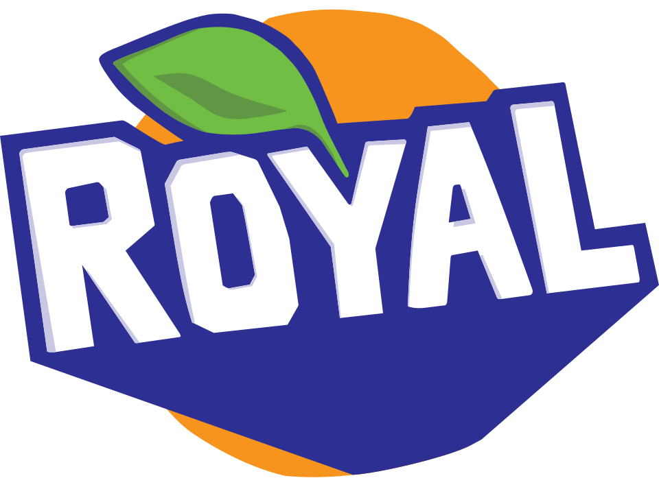

Color Psychology: What Each Color Says
Six colors, six different feelings.
RedCreates instant urgency and grabs attention.
Brand examples:    |
BlueBuilds trust by projecting stability and calm.
Brand examples: |
YellowCatches the eye faster than most colors.
Brand examples:   |
PurpleAssociated with awe, status, and exclusivity.
Brand examples:  |
GreenSignals growth, health, and “go.”
Brand examples:   |
OrangeFriendly and energetic, a softer call to action than red.
Brand examples:   |